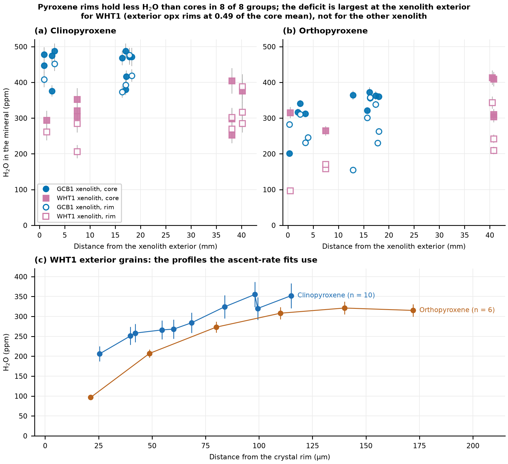

5 Results: water in olivine, cpx and opx
What do the SIMS data say about water in the xenolith minerals, mineral by mineral and volcano by volcano? Only accepted analyses are used (270 of 284; the 14 flagged or excluded rows are listed in the data workbook). Table 5.1 gives the ranges, and the sections below follow the thesis order: olivine, cpx, opx, then the contrast between volcanoes.
| Phase | Volcano and setting | Analyses | Range (ppm) | Mean (ppm) | Core and rim |
|---|---|---|---|---|---|
| Olivine | SR, GCB1 xenolith | 33 | 2.2–8.7 | 5.8 | cores 6.4, rims 4.6 |
| Olivine | SR, scoria phenocrysts | 14 | 2.5–7.9 | 5.9 | cores 6.8, rims 3.6 |
| Opx | SR, xenoliths | 61 | 96–507 | 292 | rims 142–286, cores 290–359 |
| Cpx | SR, xenoliths | 75 | 206–488 | 349 | WHT1 exterior: rims 251, cores 318 |
| Cpx | Vulcan’s Throne, xenoliths | 15 | 264–594 | 421 | position not recorded |
| Cpx | Cima, xenoliths | 29 | 64–198 | 113 | position not recorded |
5.1 Olivine
Olivine at the 1–10 ppm level is at the limit of existing techniques, so the quality of the measurement matters here more than for pyroxene. Every SR olivine value is above the 2018 quantification limit (1.44 ppm), and the median total 1 sigma is 0.34 ppm, so the 2–3 ppm differences between rims and cores are real. Earlier infrared work on SR xenoliths reported 11–16 ppm in olivine (Li et al. 2008), higher than any SIMS value here [CHECK: the infrared and SIMS scales were not compared in the sources read]. The Cima olivine, measured in 2013, are all below L_D, so they bound the olivine water at a few ppm and nothing more.
Olivine holds 2.2–8.7 ppm in SR, almost all of it measured in 2018 on GCB1 and its scoria. The cores in the GCB1 xenolith interior hold 4.3–8.7 ppm (mean 6.9, n = 8) and the cores at the exterior 4.8–7.7 ppm (mean 6.0, n = 9). The scoria phenocryst cores hold 5.9–7.9 ppm (mean 6.8, n = 5). The interior and exterior cores overlap within their scatter, and both overlap the phenocrysts, so the cores across the xenolith and in the host magma have equilibrated to the same water content (Figure 5.1).

Every olivine is zoned, with lower water in the rim. Xenolith rims average 4.6 ppm (n = 13) and phenocryst rims 3.6 ppm (n = 3), and the lowest rims, at the xenolith exterior and in phenocrysts, hold 2.2–3.6 ppm. Rims sit 1.8 ppm below cores in the xenolith and 3.2 ppm below in the phenocrysts, so the zoning is stronger in the phenocrysts, where the rim is closer to the melt. The two populations still share their core concentrations and the same zoning length scale of about 100 µm.
Ol-2 is the phenocryst whose profile sets the ascent rate (Chapter 8). Its four spots along [100] rise from 4.43 ppm at 23 µm from the rim to 5.34 at 56 µm, 7.38 at 117 µm and 7.87 at 154 µm, each with a total 1 sigma of 0.31–0.43 ppm. The profile drops by about 44 % over 150 µm, which is the signal that the diffusion fits explain. Ol-6, a xenolith olivine, drops from about 7.7 ppm in its interior to 5.4 ppm at 19 µm (Figure 5.1 c).
5.2 Clinopyroxene
The pit and roadside cpx overlap: the WHT06 cpx are not zoned at the resolution measured (cores 346 ppm, rims 368 ppm, two analyses each), while the roadside xenoliths differ in how much water their cpx hold, GCB1 being the wettest.
SR xenolith cpx hold 206–488 ppm. The GCB1 cpx hold 373–488 ppm (mean 440), the WHT01 cpx 206–438 ppm (mean 315) and the WHT06_1 cpx 312–400 ppm (mean 340). At conventional SIMS resolution GCB1 cpx rims are only slightly below cores (exterior 430 against 453 ppm; interior 415 against 449 ppm). The NanoSIMS profiles, with a spot every 5 to 10 µm, show the zoning clearly (Figure 5.2). The WHT1 exterior cpx falls from 355 ppm at 98 µm from the rim to 206 ppm at 26 µm, a drop of 42 %. The WHT1 interior cpx-2 falls from 404 ppm at 96 µm to 285 ppm at 7.5 µm, a drop of 30 %. One exterior cpx, close to the xenolith edge (1.45 mm in), is flat at 293–316 ppm. So the cpx close to the xenolith exterior record water loss at the rim, but not all grains do.

5.3 Orthopyroxene
Opx water is similar to cpx water at the same xenolith, with most SR opx cores between 290 and 360 ppm. The pit xenolith WHT06_2 holds the highest value, 507 ppm, from a single analysis in one grain, so it is not treated as a typical core.
SR xenolith opx hold 96–507 ppm. In both xenoliths with opx traverses, the cores at the xenolith exterior hold less than those in the interior: 292 against 356 ppm in GCB1 and 290 against 359 ppm in WHT1. The two large interior WHT1 opx, about 40 mm from the exterior, reach 413 and 409 ppm at their deepest points. These values anchor the wet starting melt, but the other points of these grains sit lower, near 300–320 ppm (Chapter 9).
Zoning is stronger in opx than in cpx and spreads farther into the grain. The WHT1 exterior opx at 0.5 mm from the xenolith edge rises from 96 ppm at 21 µm from the rim to 315 ppm at 172 µm. The exterior opx at 7.5 mm rises from 158 ppm at 19 µm to 264 ppm at 105 µm. Exterior rims average 142 ppm in WHT1 against interior rims at 265 ppm. Water loss in opx therefore reaches about 100–170 µm into the grain, deeper than the 100 µm in cpx, and it is clearest at the xenolith exterior. Not every GCB1 opx shows it: the exterior opx rims there (268 ppm) sit only 24 ppm below the cores (292 ppm).
Opx and cpx in the same xenolith track each other. The cpx/opx core ratio is 1.38 in GCB1 and 0.97 in WHT1, so the two pyroxenes appear to share one reservoir. The olivine/opx core ratio in GCB1 is 0.018, so olivine holds far less water relative to pyroxene than the experiments would give at equilibrium, which fits olivine re-equilibrating with the melt after the pyroxenes (Chapter 8).
5.4 Between volcanoes
The three volcanoes differ in xenolith water. SR cpx (mean 349 ppm, 206–488) are about three times wetter than Cima cpx (mean 113, 64–198), and SR opx (292 ppm) are about 3.6 times wetter than the four Cima opx (81 ppm). The melts differ in the same direction: the best melt H2O is 3.55 wt% for SR (3.59 wt% with the H2O lost to the bubble) and 1.29 wt% for Cima (Chapter 6). Cima olivine is below the detection limit, so no olivine ratio is given.
Vulcan’s Throne breaks the simple pattern. Its xenolith cpx (264–594 ppm, mean 421) are wetter than SR’s and overlap GCB1, although its best melt, 2.29 wt%, is drier than SR’s. The cpx therefore do not scale with melt H2O across all three volcanoes: the cores hold 1.2 to 2.6 times the water the recalibrated experiments predict, with Cima closest to prediction and Vulcan’s Throne farthest. Wetter magmas still carry wetter xenolith NAMs between SR and Cima, and drier magmas drier ones; the Vulcan’s Throne excess is tested in Chapter 9. Scoria cpx phenocrysts are far drier than xenolith cpx at each volcano (Vulcan’s Throne 35–65 ppm; SR phenocryst cores 74 ppm), as expected for crystals grown from the degassed melt.
Analyses flagged as bad were not used (14 rows: 6 SR olivine, 4 SR opx, 3 SR cpx and 1 Cima cpx).
The profiles above say how water left the grains; the next two chapters give the melt it left for, starting with what the inclusions record (Chapter 6) and then the ascent that the olivine profile measures (Chapter 8).
Sources: data/supplement/summary_csv/ (NAM_Volatiles, NAM_Summary, Magma_Models); the deposited Chapter 3 Results.